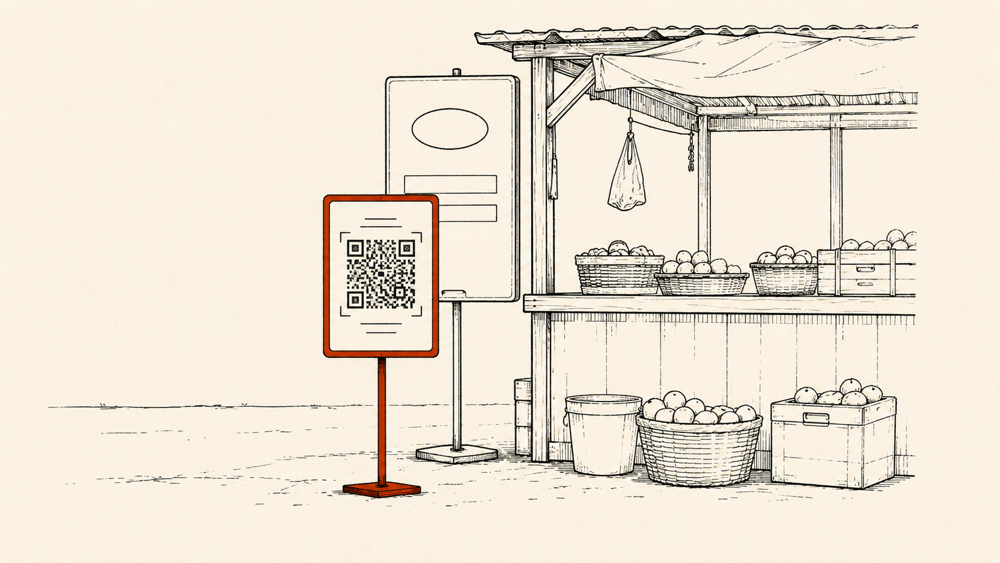

War Games: I take a company whose story has already played out, run it through a checklist I use to judge African deals, using only what was public at the time, and see whether the checklist would have caught the problem before the money went in. This is the first entry in the series that isn't a failure. It still isn't a clean green.

On September 6, 2021, Wave closed the largest Series A round in African history: $200M at a $1.7B valuation, the first unicorn built from Senegal. Six months earlier, Orange had blocked Wave from selling airtime on its app, and as of an interview roughly six weeks after the round closed, the dispute was still unresolved. This is a retrospective on a company that is still operating - and on what makes an amber flag survivable instead of fatal.
No structural red flag. Three real ambers - capital structure, distribution economics, and an active regulatory dispute with the dominant incumbent. The checklist would have said yes, but not without real, then-unresolved questions on the table. Verdict frozen on September 2021 inputs
Copia, Lipa Later, and Sendy all tell the same kind of story from different angles: a capital structure mismatch that was visible, or became visible, before the company ran out of road. It would be easy to build a series entirely out of retrospectives like that - and it would eventually stop meaning anything. A checklist that only ever explains disasters is marketing, not a diligence instrument.
Wave is still operating, still growing, and by most public measures still winning its category. The question here isn't whether the checklist would have said no. It's whether it would have said yes for defensible reasons - and whether the real, then-unresolved questions it should have raised turned out to matter or not. I've written separately about Wave's current standoff with BCEAO's interoperability mandate, which turns out to be the same pattern showing up a second time, five years apart.
Known in September 2021: Wave did not hold its own electronic money issuer license. It operated through partnerships with United Bank for Africa and Ecobank, who held the regulated deposit-taking and e-money issuance role while Wave provided the technology and distribution layer. This is not the same mismatch that killed Lipa Later or Sendy - Wave wasn't pretending to be something it wasn't, and the structure was compliant with WAEMU rules as written. But it does mean Wave's ability to scale its core product depended on the continued cooperation of two separate banking partners across two countries, not on its own regulated infrastructure.
IC question: What happens to unit economics and product control if a partner bank renegotiates terms, or if BCEAO's licensing framework doesn't evolve to accommodate an independent path for Wave specifically?
Research finding No public evidence that Wave's own EME license was guaranteed or even planned as of the round - it arrived seven months later, in April 2022, but that timing wasn't knowable in September 2021.
Known in September 2021: Wave's entire competitive position rested on undercutting incumbents on price - a 1% fee against 5-10% elsewhere. That pricing was subsidized by venture capital, not proven unit economics. Orange's former Africa and Middle East boss described the model plainly, comparing it to Amazon: funded by investors with little near-term commitment to profitability, burning cash to take share.
IC question: What is the actual contribution margin per transaction once agent commissions and cash-out costs are accounted for? Does the pricing survive if VC funding tightens?
Research finding No public gross margin, contribution margin, or per-transaction profitability figure was ever disclosed at the round, and none has been disclosed since. This remains the least transparent part of Wave's story even today.
Known in September 2021: Over half of Senegal's adult population was actively using Wave, not just registered - a behavioral signal, not a vanity metric. Roughly 5 million active users were reported around the round. Growth was driven by real transaction volume through a 25,000-agent network, with agents deliberately kept lean rather than flooded, so each agent had enough volume to earn a living.
IC question: How much of this is genuine repeat usage versus one-time novelty adoption during a price war?
Research finding The active-usage framing held up. See the YUP comparison below for a real, near-simultaneous regional test of exactly this distinction.
Known in September 2021: In March 2021, Orange blocked Wave from selling airtime inside its app and restricted its access to USSD infrastructure. Wave appealed to Senegal's telecoms regulator, ARTP. The Series A closed in September 2021, in the middle of this dispute. In an interview roughly six weeks after the round, Wave's own West Africa head confirmed the issue was still unresolved, saying the company was "working tirelessly for it to be restored" - not that it had been resolved.
IC question: What happens to Wave's product breadth and revenue if this ruling goes against them, or drags on indefinitely? Is a regulator sympathetic and fast enough to matter, or does this become a war of attrition Orange can outlast?
Research finding This is a real, live, then-unresolved regulatory fight with the dominant incumbent telco, active at the exact moment the round closed - not a settled or hypothetical risk.
Known in September 2021: Durbin and Quirk weren't outsiders learning African payments from scratch - they had already built and exited Sendwave, a cross-border remittance platform, for over $500M. The cap table included investors with real payments and regulatory experience, not just capital. No public evidence of executive departures, culture problems, or governance disputes at the time of the round.
IC question: None flagged. Founder-market fit from a prior, specific, relevant exit is one of the stronger signals available at this stage.
Known in September 2021: A clean, step-up funding history - seed, extension, Series A - with no signs of down-round pressure or a forced timeline. Too early in the company's life for exit dynamics to be a meaningful test either way.
IC question: Standard growth-stage diligence question, not a Wave-specific flag.
Zero reds, three ambers, three greens. That is the honest read of what was knowable in September 2021 - not a unanimous green light, and not a warning sign either. The checklist says yes, but a yes with three specific, then-unresolved questions attached.
Six months after Wave's Series A, Societe Generale shut down YUP, its own mobile money product, across seven African countries including Senegal and Cote d'Ivoire. The company's own closure notice gave a specific reason: YUP "has not succeeded in developing sufficiently the use" of its wallets - not a pricing-war framing, a usage framing.
In Cameroon specifically, YUP had registered 689,071 customers. Only 22,332 were active - over 96% of registrations never converted into real usage. YUP was also structured as a distributor on top of Societe Generale's own banking license, not the license-holder itself, adding a commission layer to an already-thin model - the same distributor-on-top-of-a-license structure that shows up again, with worse consequences, in Sendy's asset-heavy pivot.
This is close to the exact inverse of Wave's demand-validation strength. Wave's investor case rested on genuine behavioral adoption - people actually transacting, not just signing up. YUP had the registrations and none of the usage. Same region, overlapping timeline, same competitive pressure from Wave's pricing - and the metric that mattered turned out to be the one Wave could actually back up.
I had no stake in this company. The question that matters here is different from the failure cases: not "would it have said no," but "would the three real ambers it should have raised have turned out to matter."
Amber, resolvedCapital structure depended on two partner banks, not Wave's own license.
Resolved in seven months - Wave's own EME license arrived April 2022, removing the dependency.
Amber, partly resolvedPricing was VC-subsidized with no disclosed path to margin.
Institutional debt investors backed Wave's cash flows by 2022, a real signal - but actual margin figures are still undisclosed today, and agent commission cuts caused real strikes on the way there.
Amber, resolved in Wave's favorActive, unresolved regulatory fight with Orange at the moment of the round.
Wave continued operating and growing; the specific airtime dispute did not become fatal. It also foreshadowed a pattern - Wave remains in an unresolved position with BCEAO's interoperability mandate five years later.
Outside the toolInfrastructure vulnerability to government-mandated internet shutdowns during political unrest.
Not foreseeable from 2021 public information. A real operational risk that only became visible through 2023-2024 events nobody could have priced in at the round.
Per-transaction margin has never been disclosed, at the round or since - this is the one dimension where "no public evidence found" is true both in 2021 and today.
Wave's current PI-SPI connection status is genuinely contested in the public record as of this writing. BCEAO's own communications have listed Wave among examples of connected e-money issuers; separate investigative reporting from Jeune Afrique, closer to the June 2026 deadline extension, describes Wave as still choosing to delay over unresolved technical and cross-border fee questions. I could not resolve this conflict from public sources, and I'd rather say so than pick the version that makes the tidier ending. What is verifiable: while that regional question sits unresolved, Wave is building bilateral bank interoperability directly - Burkina Faso in July 2026 is the third market where it has done this. Whether that is a hedge against PI-SPI's delay or simply a parallel track is not stated anywhere on the record either.
A green verdict doesn't mean a clean scorecard. Zero reds, three real ambers - the value of running the checklist on a company that worked out is seeing which risks were survivable and why, not pretending they weren't there.
An unresolved fight with a dominant incumbent, live at the moment of funding, is a real amber regardless of how it ends. Wave winning its dispute with Orange doesn't make it retroactively a non-issue - it means an investor backed real regulatory uncertainty and it happened to break their way.
Registered users are not active users, and the gap between them is where growth stories actually get tested. Wave and YUP prove the same lesson from opposite directions, in the same region, in the same window of time.